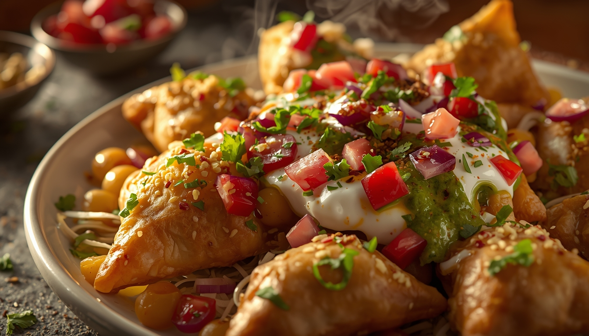

Veg
Spicy Samosa Chaat
⏱ Prep time: 40 Minutes
Difficulty: Medium
Ingredients
- 4 Punjabi Samosas
- 1 cup Chole (Chickpea Curry), hot
- 1/2 cup Whisked Yogurt (sweetened slightly)
- 3 tbsp Green Mint Chutney
- 3 tbsp Sweet Tamarind Chutney
- 1 small Onion, finely chopped
- 1/2 cup Sev (crunchy chickpea noodles)
- Fresh Coriander for garnish
- Pinch of Chaat Masala
Step-by-Step Instructions
- Prep: Ensure your chickpea curry (chole) is piping hot and your chutneys are ready.
- Crush: Place two samosas in each serving bowl and roughly crush them into bite-sized pieces using a spoon or your hands.
- Add Curry: Pour a generous ladle of the hot chickpea curry directly over the crushed samosas.
- Layer Flavors: Drizzle the whisked yogurt over the top, followed by the spicy green chutney and the sweet, tangy tamarind chutney.
- Garnish: Sprinkle the finely chopped onions and chaat masala evenly over the dish.
- Crunch: Top it all off with a handful of crispy sev and fresh coriander leaves. Serve immediately while the samosas still have some crunch!